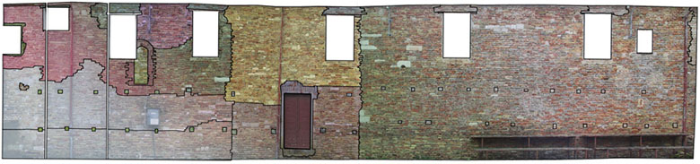

La Chiesa attuale contiene numerose testimonianze di arte e cultura popolare degne di nota: una nota tela del Ridolfi, due piccoli affreschi entro nicchie rappresentanti la "Madonna del latte", un terzo affresco denominato "La Madonna del conforto". A queste testimonianze pittoriche si aggiunge una cospicua serie di ex-voto, in legno e metallo, i cui esemplari più antichi risalgono alla fine del 1800, nonché numerosi elementi architettonici di età romana (capitelli, colonne, basi) reimpiegati all'interno delle murature della chiesa.
I DIPINTI
|
LA MADDALENA AI PIEDI DELLA CROCEClaudio Ridolfi (Verona 1570 - Corinaldo 1644) Al centro dell’abside è posto uno dei capolavori del pittore veronese Claudio Ridolfi, raffigurante il Cristo crocifisso con ai piedi la Maddalena. |
|
|
LA MADONNA DEL CONFORTOIgnoto Il dipinto murale posto sull’altare destro raffigura la Madonna col Bambino. L'affresco fu scoperto il 23 aprile 1790. |
|
|
LA MADONNA DEL LATTEIgnoto |
GLI EX-VOTO
Le tavolette votive offrono una lettura diretta, immediata e coinvolgente delle vicende quotidiane di un'umanità semplice e popolare.
Contadini, artigiani, pescatori ringraziano la Vergine per l’avvenuta guarigione da un'infermità o per aver avuto salva la vita in occasione di un grave incidente. Attraverso l’immagine si ricorda l’evento accaduto e la grazia ricevuta per intercessione della Madonna.
Le immagini, realizzate per lo più da semplici disegnatori, sono dipinte in varie tecniche: acquerello su carta, tempera o olio su legno, e sono accomunate dalla presenza della Vergine con il Bambino che guarda benevola e intercede per la guarigione del fedele.
In alcuni ex-voto l’immagine della Madonna ripropone quella casualmente scoperta in un muro all'interno della chiesa nell’aprile del 1790. In questi casi è certo che l’autore della tavoletta abbia visto l’affresco ritrovato, in altri invece l’immagine della Vergine è di pura fantasia.
Gli ex-voto offrono un interessante testimonianza di storia della cultura materiale e del paesaggio agrario, e costituiscono veri e propri documenti per la ricostruzione della storia oscura delle classi umili, che con il proprio lavoro hanno segnato il cammino della comunità.
|
1891Ex-voto per "incidente stradale". |
|
|
1892Ex-voto per furto di anguria |
|
|
1893Ex-voto per buoi imbizzarriti |
|
|
1903Ex-voto per caduta dal covone |
GLI ELEMENTI ARCHITETTONICI DI REIMPIEGO
All’interno della chiesa l’utilizzo di antichi materiali architettonici è molto evidente: nella parete destra, in particolare, caratterizzata dalla presenza di sei campate sorrette da un’alternanza di pilastri e di colonne, si apprezza l’uso di elementi architettonici di età romana all’interno della fabbrica romanica. Saggi effettuati negli anni ’70 dalla Soprintendenza Archeologica delle Marche e un ulteriore approfondimento nel corso della campagna di scavi del 2002, riportando in luce non solo l’intero sviluppo verticale di ogni singola colonna ma anche la quota originaria del piano di calpestio di epoca romanica, consentono sia una visione integrale delle colonne, sia un attento esame degli elementi reimpiegati:
|
La prima colonna, rispetto all’entrata, è costituita da cinque rocchi sovrapposti di arenaria grigia, sormontati da una base modanata, probabilmente di età romana, posta in opera capovolta ed utilizzata come capitello, mentre una seconda base costituisce l’appoggio dell’intera struttura. |
|
La seconda colonna è l’unica che presenta la sequenza canonica base-fusto-capitello, anche se i tre elementi sono stati accostati per puro gusto estetico e non perché pertinenti in origine ad un’unica struttura. La base, romana di tipo “attico”, in marmo bianco, sostiene un fusto monolitico di granito grigio, a sua volta sormontato da un capitello di tipo “corinzio-asiatico”, sempre in marmo bianco, proveniente dall’isola di Proconneso nel Mar di Marmara (Turchia). La decorazione presenta due corone sovrapposte di foglie di acanto spinoso che, toccandosi, formano caratteristiche forme geometriche in negativo. La parte superiore del capitello termina con due volute angolari. Il capitello si può datare tra la seconda metà del IV e gli inizi del V secolo. Un blocco lapideo trapezoidale, con la funzione di pulvino, sormonta il capitello e completa la sequenza. |
|
La terza colonna è costituita da una base di tipo “attico”, in marmo greco (un esemplare identico è conservato nella cripta di San Gervasio a Mondolfo), sormontata da un fusto monolitico di calcare bianco conservato parzialmente. Completa la struttura un blocco di pietra sbozzato ed utilizzato come capitello. |
L'ANALISI DEGLI ELEVATI: LA PARETE NORD

lettura degli elevati della parete nord della chiesa
L'archeologia dell'architettura è una disciplina piuttosto nuova, che cerca di ricostruire la storia edilizia di un edificio attraverso l'analisi stratigrafica delle murature. Nel caso della chiesa di Madonna del Piano, l'analisi degli elevati è stata applicata alla parete esterna settentrionale, perchè non intonacata e libera da costruzioni moderne che ne abbiano alterato l'aspetto o la leggibilità.
La parete settentrionale della chiesa è un vero e proprio palinsesto: come sulle pagine di un antico manoscritto, è stato possibile riconoscere le tracce degli interventi edilizi che hanno segnato la lunga storia dell'edificio. Ciascuno di questi interventi corrisponde a una porzione precisa della muratura, e si distingue per il colore e la dimensione dei materiali impiegati, nonché per il modo con cui questi materiali sono stati messi in opera.
Le murature più antiche sono poste in basso a sinistra; procedendo verso destra si incontrano le murature più recenti, corrispondenti agli interventi edilizi che hanno prodotto un allungamento della chiesa verso ovest. I materiali da costruzione sono costituiti da laterizi di epoca romana (tegole e mattoni reimpiegati) e laterizi medievali, molto disomogenei per colore, consistenza e dimensioni.